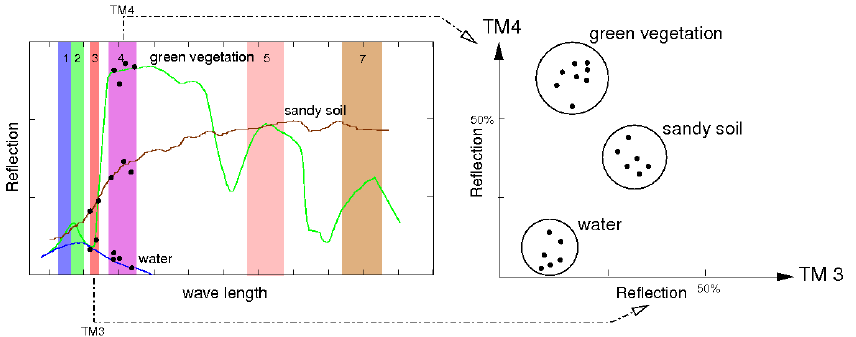

DESCRIPTION
i.cluster
performs the first pass in the GRASS two-pass unsupervised
classification of imagery, while the GRASS program
i.maxlik executes
the second pass. Both programs must be run to complete the unsupervised
classification.
i.cluster is a clustering algorithm that reads
through the (raster) imagery data and builds pixel clusters
based on the spectral reflectances of the pixels (see Figure).
The pixel clusters are imagery categories that can be related
to land cover types on the ground. The spectral
distributions of the clusters (which will be the land cover
spectral signatures) are influenced by six parameters set
by the user. The first parameter set by the user is the
initial number of clusters to be discriminated.

|
Fig.: Land use/land cover clustering of LANDSAT scene (simplified)
|
i.cluster starts by generating spectral signatures
for this number of clusters and "attempts" to end up with
this number of clusters during the clustering process. The
resulting number of clusters and their spectral
distributions, however, are also influenced by the range of
the spectral values (category values) in the image files
and the other parameters set by the user. These parameters
are: the minimum cluster size, minimum cluster separation,
the percent convergence, the maximum number of iterations,
and the row and column sampling intervals.
The cluster spectral signatures that result are composed of
cluster means and covariance matrices. These cluster means
and covariance matrices are used in the second pass
(i.maxlik) to
classify the image. The clusters or spectral classes
result can be related to land cover types on the ground.
The user has to specify the name of group file, the name of subgroup
file, the name of a file to contain result signatures, the
initial number of clusters to be discriminated, and
optionally other parameters (see below)
where the group should contain the imagery files
that the user wishes to classify. The subgroup is
a subset of this group. The user must create a group and
subgroup by running the GRASS program
i.group
before running i.cluster. The subgroup should
contain only the imagery band files that the user wishes to
classify. Note that this subgroup must contain more than
one band file. The purpose of the group and subgroup is to
collect map layers for classification or analysis. The
sigfile is the file to contain result signatures
which can be used as input for
i.maxlik.
The classes value is the initial number of clusters to be
discriminated; any parameter values left unspecified are
set to their default values.
Parameters:
- group=name
- The name of the group file which contains the imagery
files that the user wishes to classify.
- subgroup=name
- The name of the subset of the group specified in group
option, which must contain only imagery band files and more
than one band file. The user must create a group and a
subgroup by running the GRASS program
i.group
before
running i.cluster.
- sigfile=name
- The name assigned to output signature file which
contains signatures of classes and can be used as the input
file for the GRASS program
i.maxlik
for an unsupervised classification.
- classes=value
- The number of clusters that will initially be
identified in the clustering process before the iterations
begin.
- seed=name
- The name of a seed signature file is optional. The seed
signatures are signatures that contain cluster means and
covariance matrices which were calculated prior to the
current run of i.cluster. They may be acquired
from a previously run of i.cluster or from a
supervised classification signature training site section
(e.g., using the signature file output by
i.class).
The purpose of seed signatures is to optimize the cluster
decision boundaries (means) for the number of clusters
specified.
- sample=row_interval,col_interval
- These numbers are optional with default values based on
the size of the data set such that the total pixels to be
processed is approximately 10,000 (consider round up).
- iterations=value
- This parameter determines the maximum number of
iterations which is greater than the number of iterations
predicted to achieve the optimum percent convergence. The
default value is 30. If the number of iterations reaches
the maximum designated by the user; the user may want to
rerun i.cluster with a higher number of iterations
(see reportfile).
Default: 30
- convergence=value
- A high percent convergence is the point at which
cluster means become stable during the iteration process.
The default value is 98.0 percent. When clusters are being
created, their means constantly change as pixels are
assigned to them and the means are recalculated to include
the new pixel. After all clusters have been created,
i.cluster begins iterations that change cluster
means by maximizing the distances between them. As these
means shift, a higher and higher convergence is
approached. Because means will never become totally
static, a percent convergence and a maximum number of
iterations are supplied to stop the iterative process. The
percent convergence should be reached before the maximum
number of iterations. If the maximum number of iterations
is reached, it is probable that the desired percent
convergence was not reached. The number of iterations is
reported in the cluster statistics in the report file
(see reportfile).
Default: 98.0
- separation=value
- This is the minimum separation below which clusters
will be merged in the iteration process. The default value
is 0.0. This is an image-specific number (a "magic" number)
that depends on the image data being classified and the
number of final clusters that are acceptable. Its
determination requires experimentation. Note that as the
minimum class (or cluster) separation is increased, the
maximum number of iterations should also be increased to
achieve this separation with a high percentage of
convergence
(see convergence).
Default: 0.0
- min_size=value
- This is the minimum number of pixels that will be used
to define a cluster, and is therefore the minimum number of
pixels for which means and covariance matrices will be
calculated.
Default: 17
- reportfile=name
- The reportfile is an optional parameter which contains
the result, i.e., the statistics for each cluster. Also
included are the resulting percent convergence for the
clusters, the number of iterations that was required to
achieve the convergence, and the separability matrix.
NOTES
Running in command line mode, i.cluster will
overwrite the output signature file and reportfile (if
required by the user) without prompting if the files
existed.
EXAMPLE
Preparing the statistics for unsupervised classification of
a LANDSAT subscene in North Carolina:
g.region rast=lsat7_2002_10 -p
# store VIZ, NIR, MIR into group/subgroup
i.group group=my_lsat7_2002 subgroup=my_lsat7_2002 \
input=lsat7_2002_10,lsat7_2002_20,lsat7_2002_30,lsat7_2002_40,lsat7_2002_50,lsat7_2002_70
i.cluster group=my_lsat7_2002 subgroup=my_lsat7_2002 sigfile=sig_clust_lsat2002 \
classes=10 report=rep_clust_lsat2002.txt
SEE ALSO
The GRASS 4
Image
Processing manual
i.class,
i.group,
i.gensig,
i.maxlik
AUTHORS
Michael Shapiro,
U.S.Army Construction Engineering
Research Laboratory
Tao Wen,
University of Illinois at
Urbana-Champaign,
Illinois
Last changed: $Date$